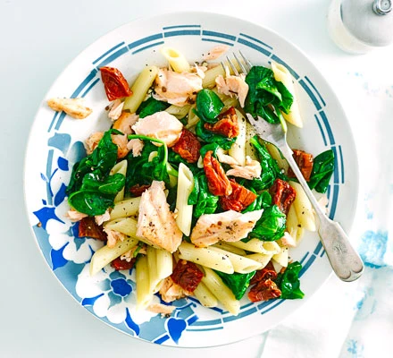

Salmon & spinach pasta

About :
A fresh, healthy pasta dish that's ready in a flash.
A handful of punchy ingredients make for a colourful supper that's high in folate, fibre, iron and omega-3 :)
Ingredients:
- 200g penne
- 2 skinless salmon fillets
- 60g sundried tomatoes
- 80g bag spinach
Method:
Cook the pasta following pack instructions.
Fry the salmon for 4-6 mins with the tomatoes in their oil.
Flake the fish in the pan, then add the drained pasta and the spinach.
Stir for 1-2 mins until the spinach is wilted and everything is coated.
Return to Top
Return to main page